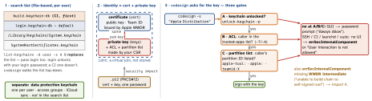

security-build · folio
In one line: macOS has two keychains: the legacy file-based ones
(login.keychain-db, System.keychain, any file you create) searched in a search
list and guarded by per-item ACLs + a partition list, and the iOS-style data
protection keychain (one per user, guarded by access groups from entitlements; needed for
iCloud Keychain, biometrics, Secure Enclave). codesign finds its identity (certificate +
private key) in the file-based search list — so CI must create, unlock and authorise a keychain.
Download PDF Print view LaTeX source


How it works
- File-based = classic Mac OS heritage, “on the road to deprecation” (
SecKeychainCreatedeprecated, macOS 12 SDK); data protection = iOS’s, on the Mac since iCloud Keychain (10.9) — opt in withkSecUseDataProtectionKeychain. - Item classes (
security4-letter codes):genpgeneric password,inetinternet password,cert,keys;idnt= identity, assembled at query time from a cert whose public key matches a stored private key. - ACL = which apps may use an item without a prompt (
-T /usr/bin/codesign;-A= any app, no prompt). Code identity is the app’s designated requirement, so a re-signed or re-channelled app (e.g. TestFlight build) gets a new prompt. - Partition list (added later to the file-based keychain, no public API): an extra ACL tag on a key naming allowed signer groups —
apple:(Apple-signed system code),apple-tool:(Apple tools such ascodesign/security),teamid:ABCDE12345. A key imported bysecurity importgets onlyapple-tool:(unverified). - Identity: the
.cerApple issues holds the public key only; the private key was created on the Mac that made the CSR. Export both as a.p12.
File-based vs data protection keychain
| file-based | data protection | |
|---|---|---|
| where | files (login, System, yours) in a search list | one per user, by caller context |
| who may read | per-item ACL + partition list; prompts | access groups (entitlements) + SecAccessControl |
| sync | never | iCloud Keychain (kSecAttrSynchronizable) |
| daemons / root | yes (System keychain) | no — user login context only |
| tools | security, Keychain Access, codesign | SecItem on all Apple platforms |
Remember
“Search list finds it, unlock opens it, ACL + partition list let codesign touch it.”
Example — the CI keychain recipe
KC="$RUNNER_TEMP/build.keychain-db"; PW="$(uuidgen)" # throwaway
security create-keychain -p "$PW" "$KC"
security set-keychain-settings -lut 21600 "$KC" # lock on sleep, after 6 h
security unlock-keychain -p "$PW" "$KC"
security import dist.p12 -k "$KC" -P "$P12_PW" -f pkcs12 \
-T /usr/bin/codesign -T /usr/bin/security # ACL: these tools
security set-key-partition-list -S apple-tool:,apple: -s -k "$PW" "$KC"
security list-keychains -d user -s "$KC" login.keychain-db # keep login!
security find-identity -v -p codesigning "$KC" # expect 1 valid identity
xcodebuild archive ... OTHER_CODE_SIGN_FLAGS="--keychain $KC"
security delete-keychain "$KC" # always, in a trap/post stepWhere the pieces come from
- Apple WWDR intermediate must be in a searched keychain or
codesigncannot build the chain — download it from Apple PKI (apple.com/certificateauthority). - Keychain Access edits ACLs (“Access Control” tab) of file-based items only;
security dump-keychain -aprints the ACLs.
security — the commands you are asked about
create-keychain -p | new file keychain (.keychain-db) + password |
set-keychain-settings -lut | -l lock on sleep · -u lock after -t secs; no flags = never lock |
unlock-keychain -p | gate A; again in every new session (SSH) |
import -k -P -T/-A -f | .p12/.cer into keychain -k; -T app into the key’s ACL |
set-key-partition-list -S -s -k | partitions · signing keys only · keychain password |
list-keychains -d user -s | set the search list (no -s = print it) |
default-keychain -s | where new items land; CI rarely needs it |
find-identity -v -p codesigning | valid signing identities: SHA-1 + name |
find-generic-password -s -a -w | read a secret (-w prints only it) |
add-generic-password -U | store / update (-U) a secret |
add-trusted-cert -r trustRoot | trust a private CA (-d: admin domain) |
cms -D -i | decode CMS, e.g. a .mobileprovision |
delete-keychain | remove the file + its search-list entry |
Traps
- Fixing the ACL won’t help a locked keychain — unlock first (Apple DTS).
list-keychains -s $KCalone drops login from the search list.find-identity: “0 valid identities” though the cert is there → private key missing (imported.cer, not.p12) or WWDR intermediate missing/expired.sudo codesign: root can’t see your login keychain.-Aon a long-lived keychain = every app reads the key silently; OK only on a throwaway CI keychain.- Mac
SecItemwithoutkSecUseDataProtectionKeychainlands in the file-based keychain — ACL prompts after re-signing, no access-group sharing. security find-generic-password -win a CI log prints the secret.